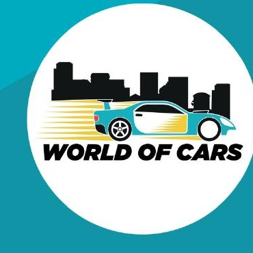
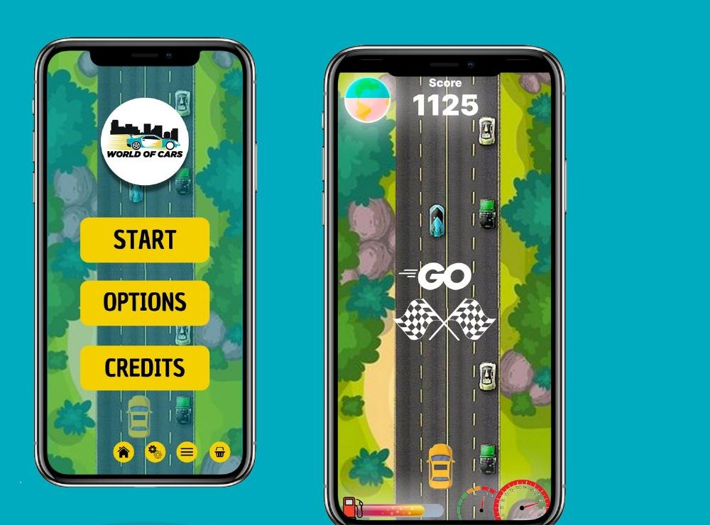
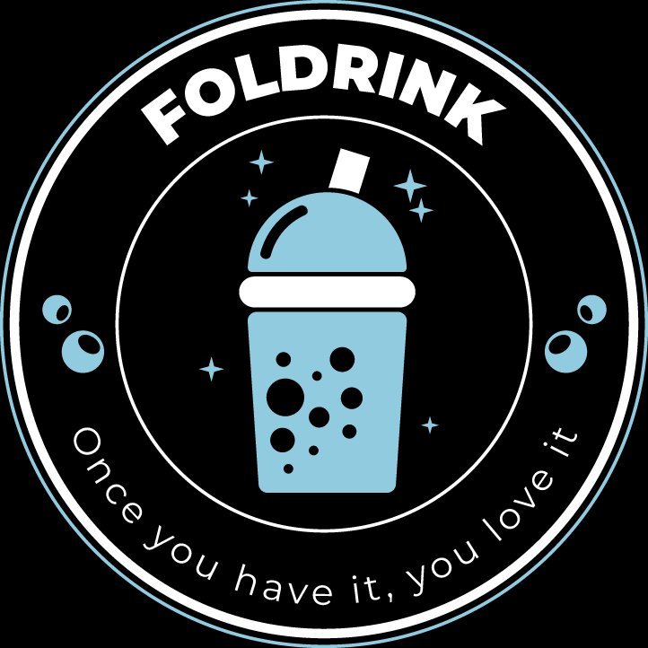
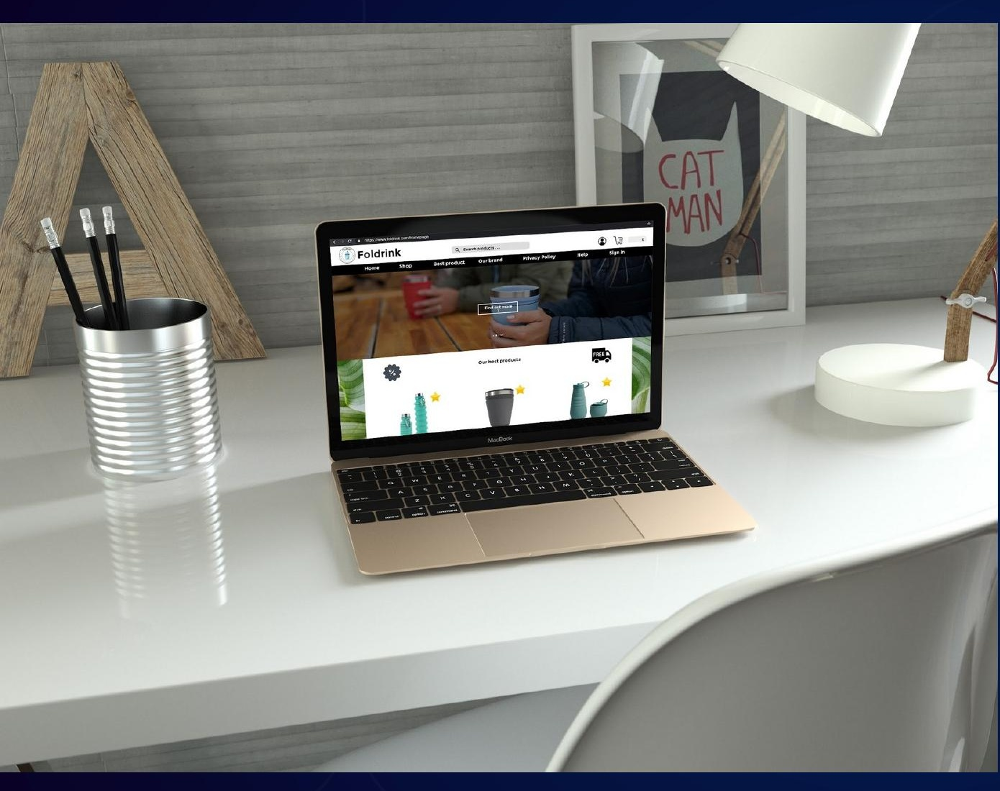
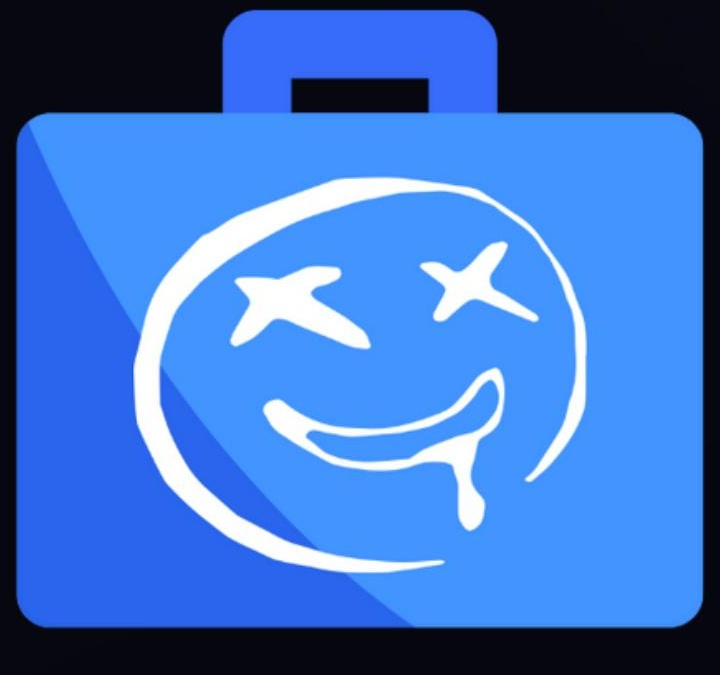
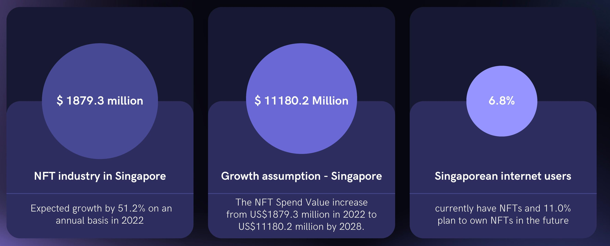

Diplômé d'un MBA et d'un Mastère en stratégie digitale (ESCEN, parcours international), je maîtrise le marketing e-commerce, l'analyse de données, le SEO, l'UX/UI et les bases du code. Ancien sportif de haut niveau (baseball SHN), j'apporte rigueur et esprit d'équipe à chaque projet.
5 ans
Alternance & stages cumulés
5 pays
Projets réalisés à l'international
TOEIC 765
Niveau B2 en anglais
📊
Marketing & Data
Analytics, SEO, Ads, automatisation, stratégie de contenu, réseaux sociaux, rédaction web.
🎨
UX / UI & Web
Maquettes, prototypes, développement WordPress, HTML/CSS, Shopify, Prestashop.
📈
Dataviz & Reporting
Looker Studio, Power BI, Tableau, Excel — création de dashboards de reporting.
🌍
Parcours international
5 Learning Expeditions : Dublin, Berlin, Montréal, Singapour, San Francisco. Projets menés avec des équipes multiculturelles.
Parcours
Formation & expériences
Sept 2021 – Sept 2024 · 3 ans
Alternant — Blue Efficience
Protection d'œuvres audiovisuelles et droit d'auteur
Conception UX/UI, développement web (WordPress, PyCharm), optimisation SEO, création de dashboards de reporting Dataviz.
Six projets menés en équipe lors de mon parcours ESCEN — du game design à la stratégie startup en passant par le consulting réel.
San Francisco · 2024
Tech Again
Startup revente d'électronique — business model
StartupStratégie
Singapour · 2023
Rude Wallet
App NFT — prototype Figma interactif
UX/UIStratégie
Médoc · 2022
FEFOMM 2022
Comm. digitale & print pour un festival réel
CommunityStratégie
Montréal · 2022
World of Cars
Jeu mobile écoresponsable — prototype jouable
UX/UIStratégie
Berlin · 2021
Foldrink
Marque éco & site e-commerce WordPress
WebUX
DBH · 2020
Flight Inspiration
Audit UX & stratégie digitale e-commerce réel
UXWebConsulting
Clique sur un projet pour le découvrir
Learning expedition · Montréal, 2022
World of Cars
Conception d'un jeu mobile de course écoresponsable — de l'étude de marché au prototype jouable


Rôle
Prototypage
Équipe
4 personnes
Outil
Construct 3
Durée
4 sprints
Le concept
Un jeu de course où le joueur incarne une voiture devant aller le plus loin possible sans dépasser un seuil de pollution. L'objectif : sensibiliser à l'impact écologique du secteur automobile à travers des mécaniques de jeu plutôt qu'un discours moralisateur — accélérer trop vite ou griller un feu rouge fait grimper la jauge de pollution, jusqu'à l'explosion.
Méthodologie en 4 sprints
1Étude de marché — analyse du marché du jeu vidéo (300 Md$ en 2021), étude concurrentielle face à Hill Climb Racing et Subway Surfers, SWOT et PESTEL.
2Game Design Document & prototype — définition des mécaniques, des personas joueurs, et développement du prototype jouable sur Construct 3.
3Tests utilisateurs & business model — entretiens structurés avec 4 testeurs réels, stratégie de gamification et Business Model Canvas complet.
4Stratégie de lancement — plan marketing combinant campagnes online, offline et programme de fidélisation des joueurs.
Résultats
4testeurs utilisateurs interrogés
109slides de documentation produit
1prototype entièrement jouable
Compétences mobilisées
Game designConstruct 3Étude de marchéBusiness modelUX researchGamification
Le prototype se joue directement dans le navigateur, sans téléchargement. Compatible desktop et mobile.
Learning expedition · Berlin (à distance), 2021
Foldrink
Création d'une marque écoresponsable et de son site e-commerce, du branding au lancement marketing


Projet académique réalisé en 2021. Le site n'est plus hébergé en ligne — les visuels ci-dessous sont des captures réelles du site WordPress livré à l'époque.
Rôle
UX & WordPress
Équipe
5 personnes
Outil
WordPress / WooCommerce
Durée
5 sprints
Le concept
Foldrink propose des gobelets, gourdes et accessoires réutilisables et pliables, pensés pour réduire les déchets plastiques du quotidien. La marque s'est construite autour de trois engagements : faciliter la vie des utilisateurs, respecter les gestes barrières en contexte sanitaire (le projet a été mené en pleine pandémie), et participer à la préservation de l'environnement.
Méthodologie en 5 sprints
1Branding & étude stratégique — identité de marque, logo, personas, Value Proposition Canvas, SWOT, PESTEL et analyse des 5 forces de Porter.
2UX & wireframes — structuration du site (desktop, tablette, mobile), wireframes des pages clés et premiers mockups visuels.
3Développement du site — intégration complète sous WordPress/WooCommerce : boutique, page "Our mission", avis clients, newsletter.
4Growth marketing — landing page jeu-concours pour générer des leads, stratégie SEO et suivi des KPIs via Google Analytics.
5Plan d'action marketing — campagnes social media, vidéos promotionnelles et stratégie d'influence pour le lancement.
Projet réalisé entièrement à distance depuis la France pendant la Learning Expedition Berlin, le programme ayant basculé en distanciel en raison du contexte sanitaire.
Learning expedition · Singapour, 2023
Rude Wallet
Conception d'une application mobile de gestion de portefeuille NFT pour la communauté Rudekidz

Centraliser la gestion de portefeuille NFT pour une communauté
Le projet Rudekidz, une collection NFT à forte communauté, manquait d'un outil pour centraliser la gestion des investissements de ses membres et récompenser leur engagement. Rude Wallet propose une application mobile de suivi de portefeuille, pensée pour le marché singapourien.
Rôle
UX/UI & stratégie
Équipe
2 personnes
Outil
Figma
Marché cible
Singapour
Le problème
Les membres du projet NFT Rudekidz géraient leurs investissements sur de multiples plateformes sans vue d'ensemble, sans suivi de leur engagement communautaire et sans reconnaissance pour leur fidélité. Cette dispersion limitait à la fois la qualité de leurs décisions d'investissement et leur sentiment d'appartenance au projet.
Méthodologie
1Étude de marché — analyse du marché NFT mondial et singapourien, benchmark concurrentiel (OpenSea, Magic Eden, NiftyGateway), SWOT et PESTEL.
2UX research — personas, value proposition canvas, customer journey map et identification des 5 moments de vérité.
3UX/UI Design — architecture applicative, wireframes, maquettes Figma haute-fidélité et prototype interactif sur 8 écrans clés.
4Stratégie marketing & growth — plan marketing à 2 ans avec objectifs chiffrés (B2C et B2B), growth hacking et stratégie RSE.
Objectifs business (année 1)
3 258installations visées à Singapour
30 ETHvolume de transactions mensuel
8écrans prototypés et testables
Compétences mobilisées
UX/UI DesignFigmaÉtude de marchéPersonasGrowth marketingStratégie RSE
Taille du marché NFT à Singapour

Essayer le prototype
L'application est entièrement navigable ci-dessous. Clique à travers les écrans comme tu le ferais sur un vrai téléphone.
Création d'une startup de revente d'appareils électroniques entre particuliers — du business model au plan marketing
Startup · USA
Don't throw away your electronics, sell them.
Marketplace C2C d'électronique d'occasion pensée pour réduire les déchets numériques
$94 Mdmarché projeté en 2030
×2croissance du marché en 7 ans
Rôle
CTO
Équipe
4 personnes
Marché cible
États-Unis
Ville
San Francisco
Le concept
Tech Again est une application de vente et d'achat d'appareils électroniques d'occasion entre particuliers, sans intermédiaire professionnel. Objectif : réduire les déchets numériques tout en rendant la technologie accessible à tous. Les vendeurs donnent une seconde vie à leurs appareils, les acheteurs y accèdent à prix réduit — win-win pour l'utilisateur et pour la planète.
Méthodologie
1Analyse de marché — étude du marché mondial de la revente d'électronique (48,29 Md$ en 2023, projection 94,10 Md$ en 2030), benchmark concurrentiel, SWOT et PESTEL.
2Business model — conception du modèle de revenus multi-sources : commissions sur transactions (5-10%), protection acheteur (1-3%), listing fees et partenariats affiliés.
3Stratégie marketing — ciblage 15-55 ans dans les grandes villes tech américaines (SF, NYC, Austin), campagnes Meta Ads et TikTok Ads, gamification pour l'engagement dès le lancement.
4Plan financier — modélisation des revenus avec projections pluriannuelles, structure de coûts et stratégie de croissance B2C.
Chiffres clés
$48 Mdtaille du marché en 2023
$94 Mdprojection marché 2030
62,5 %du CA via commissions transactions
Répartition des revenus
Commissions transactions62,5 %
Protection acheteur29,8 %
Publicité & listing4,8 %
Compétences mobilisées
Stratégie startupBusiness modelÉtude de marchéMarketing digitalPlan financierPitch
DBH · Mission consulting réelle, 2020
Flight Inspiration
Audit, refonte UX et stratégie digitale pour une e-boutique de porte-clés en pièces d'avion authentiques
Entreprise réelle · E-commerce
De l'audit terrain à la refonte complète d'un site e-commerce
Mission de consulting sur 3 sprints pour optimiser l'expérience utilisateur, l'image de marque et la visibilité digitale de Flight Inspiration
Mission réelle
3 sprints livrés
Shopify e-commerce
Rôle
UX & Marketing digital
Équipe
6 personnes
Type
DBH · Consulting
Durée
3 sprints
Flight Inspiration est une vraie boutique e-commerce vendant des porte-clés artisanaux fabriqués à partir de pièces d'avion authentiques récupérées. Notre groupe a mené une mission de consulting complète pour optimiser leur présence digitale.
Sprint 1
Audit & Analyse concurrentielle
Diagnostic complet du site et du positionnement de Flight Inspiration face à ses concurrents directs (Planetags, Planeskins, Aviation Tag, Aviator Story). Analyse SWOT de chaque acteur, étude du marché e-commerce de niche, cartographie du parcours client et identification des pain points.
SWOTBenchmarkUX researchParcours client
Sprint 2
Refonte UX/UI & Nouvelle identité
Proposition d'une nouvelle charte graphique et d'un logo pour pallier l'absence d'identité de marque. Maquettes Figma de la homepage, des fiches produit et de la page "About Us". Corrections des principaux défauts UX : bannière anxiogène, erreurs 404, galerie photos désorganisée, navigation trop chargée.
MaquettesCharte graphiqueLogoShopifyUX/UI
Sprint 3
Stratégie digitale & Déploiement
Mise en ligne du site refondu sur Shopify. Élaboration d'une stratégie SEO/SEA (mots-clés longue traîne, Google Ads), plan de Social Media Marketing avec calendrier éditorial, et campagne Instagram Ads (150€ pour 21 000 à 54 000 impressions estimées) ciblée sur la période de Noël.
Stratégie de communication digitale, presse et print pour la Fête de l'Environnement, de la Forêt et des Métiers du Médoc
Festival réel · Médoc, Gironde
Concevoir et déployer la communication complète d'un festival régional
Mission de 3 sprints pour définir et mettre en œuvre la stratégie de communication du FEFOMM 2022 sur tous les canaux : digital, presse et print
Community Manager
5 canaux activés
Dossier de presse livré
Rôle
Community Manager
Équipe
3 personnes
Type
DBH · Consulting
Événement
9 & 11 sept. 2022
Le FEFOMM est un festival réel célébrant l'environnement, la forêt et les métiers du Médoc (Carcans, Gironde). Notre groupe a pris en charge l'intégralité de sa stratégie de communication 2022 — en partant de zéro ou presque, la communication 2021 se limitant à une page Facebook et quelques articles de presse régionale.
Canaux activés
Instagram
Posts & stories créés pour la durée du festival
Facebook Ads
Campagnes sponsorisées ciblées sur la région Médoc
LinkedIn
Événement professionnel pour toucher les partenaires
TikTok
Vidéos sur les activités pour capter un public jeune
Presse & Radio
Articles dans presses régionales (Sud Ouest, Brut…) et annonces radio
Print
Flyers 6 pages + dossier de presse print livré à des organes ciblés
Sprint 1
Diagnostic & Stratégie
Audit de la communication existante (édition 2021), définition de la stratégie 2022 sur trois axes — digital, presse/radio, print — et construction du rétro-planning général de la campagne.
Sprint 2
Création de contenus & Planning éditorial
Conception et production de tous les contenus digitaux : visuels Instagram, Facebook Ads, événement LinkedIn, publications dans les groupes Facebook locaux, vidéos TikTok sur les activités du festival. Livraison du planning éditorial complet.
Sprint 3
Dossier de presse & Communication print
Rédaction et mise en forme du dossier de presse print et digital. Identification des organes de presse régionaux et nationaux à cibler. Rétroplanning de la diffusion print avec fabrication de flyers 6 pages en maison d'impression.
Certifications
Formations & Certifications
Certifications obtenues en autonomie et en formation sur les outils clés du marketing digital, de la data et du développement web.
Google
10
HubSpot
6
SEMrush
1
OpenClassrooms
17
SoloLearn
4
TOEIC
1
NEXT-U
1
Clique sur un logo pour voir les certifications
← glisser pour tourner →
Google Ads
Publicité sur le Réseau Display
Mars 2022
Google Ads
Annonces Shopping
Avr. 2022
Google Ads
Mesures Google Ads
Avr. 2022
Google Ads
Publicité vidéo
Avr. 2022
Google Ads
Réseau de Recherche
Avr. 2022
Google Ads
Applications
Avr. 2022
Google Analytics
Analytics pour les débutants
2022
Google Analytics
Analytics avancé
2022
Google Digital Garage
Fondamentaux du marketing numérique
Fév. 2021
Google Tag Manager
Principes de base de Google Tag Manager
2024
Marketing
Content Marketing
Juin 2023
Marketing
Email Marketing
Juin 2023
Marketing
Inbound Marketing
Juin 2023
Marketing
Social Media
Juin 2023
Design & Web
Growth-Driven Design
Juin 2023
Revenue
Revenue Operations
Juin 2023
SEO
Cours accéléré SEO avec Brian Dean
Juin 2023
E-commerce
Préparer son projet e-commerce
Juin 2021
E-commerce
Créer son site
Juin 2021
E-commerce
Générer du trafic sur son site
Juin 2021
E-commerce
Optimiser sa conversion
Juin 2021
E-commerce
Piloter sa performance
Juin 2021
Gestion de projet
Analysez les risques de votre projet
Juin 2023
Data / Analytics
Comprenez votre audience avec Google Analytics
Janv. 2024
Data / Big Data
Concevez des architectures Big Data
Janv. 2024
Data
Réalisez des dashboards avec Power BI
Fév. 2024
Data
Réalisez un dashboard avec Tableau
Fév. 2024
Data
Initiez-vous à la gouvernance des données
Mars 2024
Gestion de projet
Construisez votre roadmap produit
Janv. 2024
Gestion de projet
Lancez votre projet innovant
Janv. 2024
Gestion de projet
Testez vos idées avec le lean prototyping
Janv. 2024
Business
Construisez un business plan
Janv. 2024
Business
Gérez votre trésorerie
Janv. 2024
Growth
Accélérez la croissance avec le growth hacking
Janv. 2024
Développement web
HTML
Nov. 2019
Développement web
CSS
Nov. 2019
Développement web
JavaScript
Fév. 2021
Développement web
jQuery
Fév. 2021
Langue
TOEIC Listening & Reading — 765/990
Avr. 2024 · valide jusqu'en avr. 2026
Stratégie mobile
LXP Singapore : Mobile Strategy
Mars 2023
Contact
Travaillons ensemble
Ouvert aux opportunités CDI, CDD, freelance ou consultant en marketing digital, stratégie web ou gestion de projet.